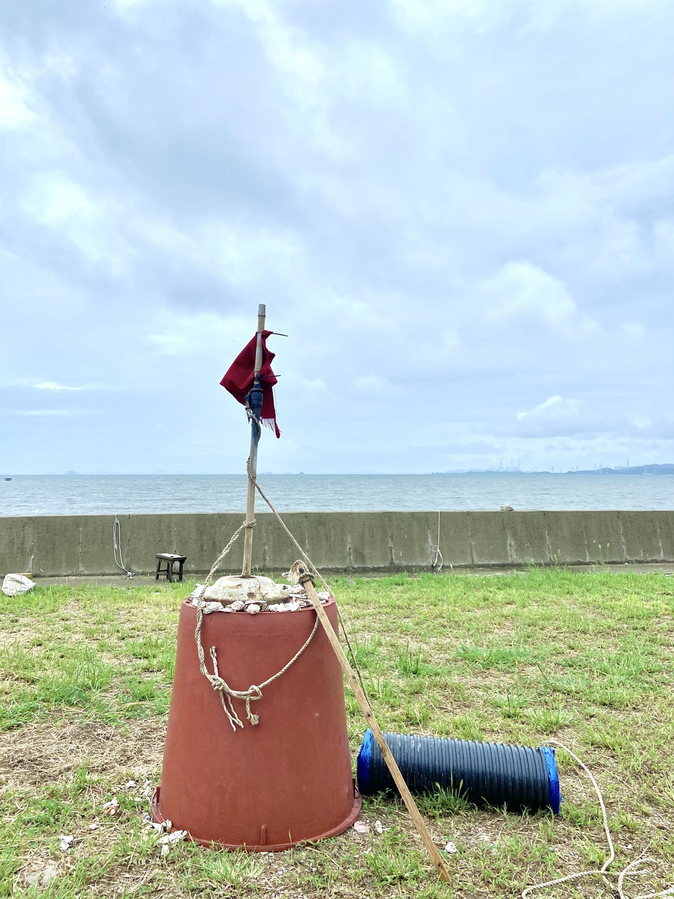
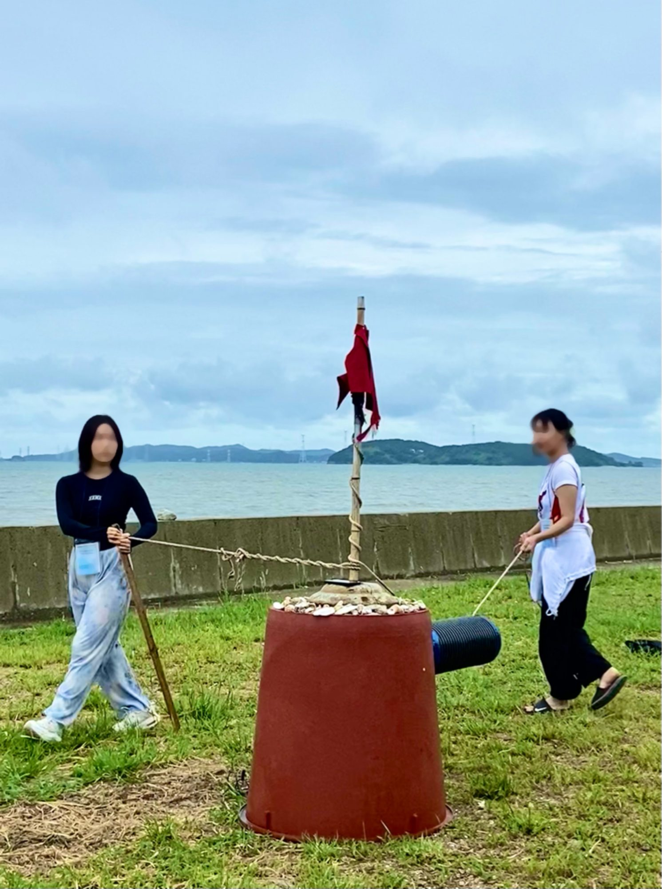
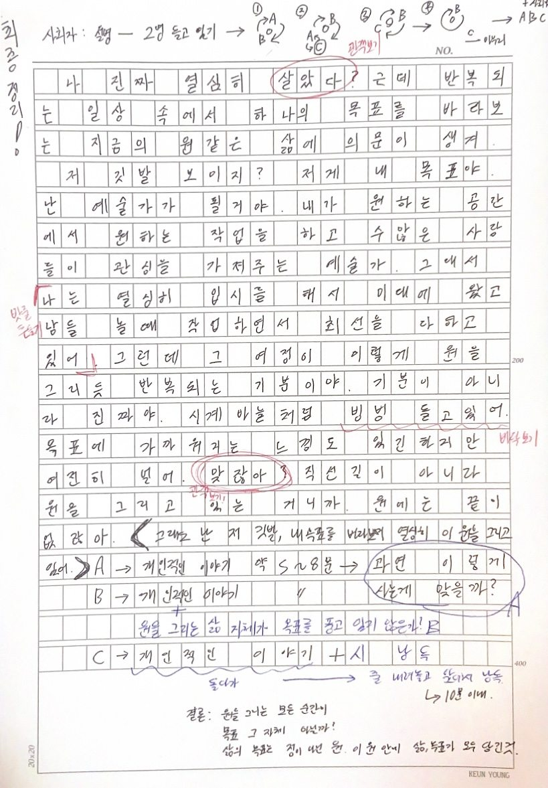

원을 그리는 삶은 어디로 가는가?
- 역할·형식Role
- 퍼포먼스 (사회자 1명, 배우 3명) · 2023년 8월 29일 14:30–14:50 · 대부도 · 해양 쓰레기, 조개껍데기
- 관련Related
- 윤슬바다학교 2기 창작 레지던시
<대본 일부>
나 진짜 열심히 살았다?
근데 반복되는 일상 속에서 하나의 목표를 바라보는 지금의 원 같은 삶에 의문이 생겨.
…
점처럼 저기 찍힌 목표가 아닌 점을 찍어 원을 그리고 있는 이 삶 자체가 우리 삶의 목표
그 자체 아닐까?
3명의 퍼포먼스 참가자는 줄을 잡고 원을 그리면 각자 삶에 대한 이야기를 합니다. 배우, 철학가, 예술가를 꿈꾸는 3명은 반복되는 일상을 원을 그리는 행위를 통해 보여줍니다. 깃발은 목표를 의미하고 그 목표를 향해 달려온 개인의 이야기를 합니다.
그리고 이 행위의 결과 우리는 모두 반복되는 일상으로 인식되었던 지금이 모든 순간이 목표로 하는 삶의 일부이자 그 자체임을 말하면서 퍼포먼스가 마무리 됩니다.
결과는 과정의 함축임을, 그리하여 목표는 최선을 다해 살아가는 순간의 결합체임을 말하고 싶었습니다. 같은 동선으로 돌지만 3명은 모두 다른 밧줄을 들고 다른 태도를 보여줍니다. 그리고 각자 다른 목표를 가지지만 하나의 깃발을 바라보고 있죠. 이는 결국 목표에 대한 보편적인 인식이 있지만 모두 다른 삶을 살면서 개개인의 목표를 멋지게 그려 나가고 있음을 보여줍니다.
그리고 이 퍼포먼스에 활용된 직접 수집한 해양 쓰레기는 돌고 도는 일상을 보여주는 재료로서 작품의 일부가 됩니다. 일상에 대한 애정 어린 시선과 쓰레기를 예술로 활용하기 위해 수집하는 행위는 같은 맥락을 이루며 작업의 과정이자 결과가 됩니다.
<Excerpt from the script>
I really did live my life to the fullest, you know?
But living this repetitive everyday life, looking toward a single goal, I've started to question a life that is like a circle.
…
Rather than a goal marked over there like a dot, isn't this life itself, drawing a circle dot by dot, the goal of our lives
in itself?
Holding a rope, the three performers walk in a circle, each telling a story about their own life. The three, who dream of becoming an actor, a philosopher and an artist, show repetitive daily life through the act of drawing a circle. The flag stands for a goal, and each of them tells their own story of running toward that goal.
As a result of this act, the performance closes by saying that every moment of now, which we all perceived as repetitive daily life, is part of the life we aim for, and indeed that life itself.
I wanted to say that the result is a distillation of the process, and so the goal is the sum of moments lived to the fullest. Though they circle along the same path, the three each hold a different rope and show a different attitude. And though each has a different goal, they all look toward a single flag. This shows that while there is a shared understanding of what a goal is, each person lives a different life and draws their own goal in their own wonderful way.
The marine debris I collected myself and used in this performance becomes part of the work, as a material that shows daily life going round and round. An affectionate gaze toward everyday life and the act of collecting trash to use it as art belong to the same context, becoming both the process and the result of the work.


